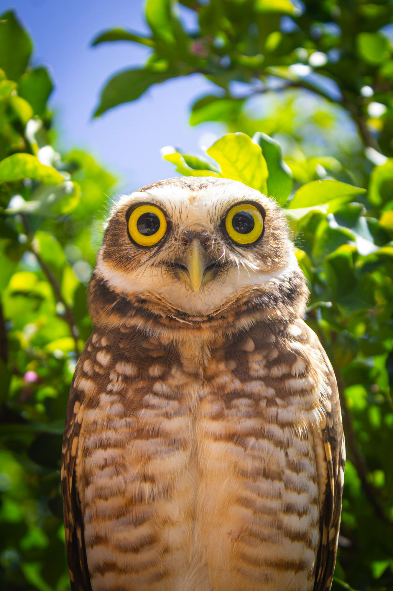

Automatic fill-flash is very sophisticated, yet easy to use. Dialing in a specific amount of fill on the back of the flash unit provides a given ratio of illumination between the ambient light and the fill-flash. If the natural light is soft, I find that -2 stops of flash fill works well. For the "average" sunlit condition, I
prefer -1 1⁄3 stops. In contrasty light, I dial in -1⁄3 or none at all. Various lighting situations require different amounts of fill light. Experiment by running tests, and vary the amount of fill-flash to see what appeals to you. If you're shooting with a digital camera, you'll see results instantly.
Animals that are backlit or lit from above often require the use
of fill-flash to improve the photo. Backlighting can be very dramatic, but when it's the only source of illumination, an overexposed background is the price you'll pay for getting a properly exposed subject that reveals detail on the shadow side. Fill-flash can remedy this by adding detail to your subject's shadow side, which will help balance the overall exposure.
Automatic fill-flash is very sophisticated, yet easy to use. Dialing in a specific amount of fill on the back of the flash unit provides a given ratio of illumination between the ambient light and the fill-flash. If the natural light is soft, I find that -2 stops of flash fill works well. For the "average" sunlit condition, I prefer -1 1⁄3 stops. In contrasty light, I dial in -1⁄3 or none at all. Various lighting situations require different amounts of fill light. Experiment by running tests, and vary the amount of fill-flash to see what appeals to you. If you're shooting with a digital camera, you'll see results instantly.
Animals that are backlit or lit from above often require the use of fill-flash to improve the photo. Backlighting can be very dramatic, but when it's the only source of illumination, an overexposed background is the price you'll pay for getting a properly exposed subject that reveals detail on the shadow side. Fill-flash can remedy this by adding detail to your subject's shadow side, which will help balance the overall exposure.